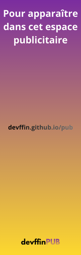

Oslo en direct
Hors antenneEn ce moment : Chargement...

Erlen héberge des radios gratuites. Choisissez une station et appuyez sur lecture.
En savoir plusEn ce moment : Chargement...
En ce moment : Chargement...
En ce moment : 100% musique en direct
Contactez-nous à mlr.suppor105@gmail.com (Yotvin) ou à contact.diffin@gmail.com (diffin/devffin).
Note : vous pouvez aussi nous contacter via LNET : Azerty1@lnet.